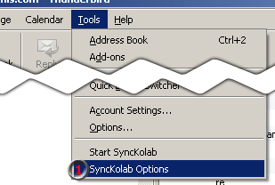
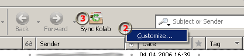
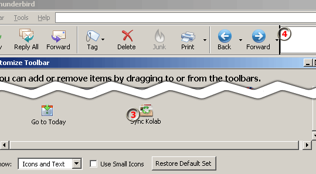
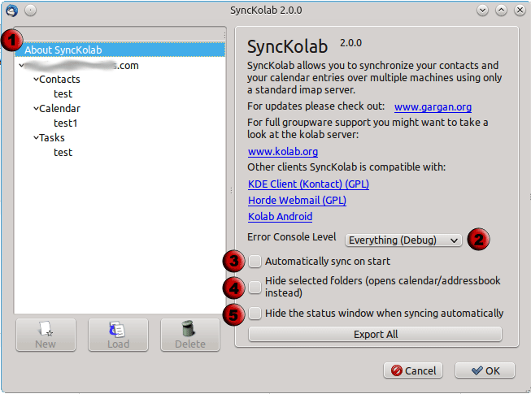
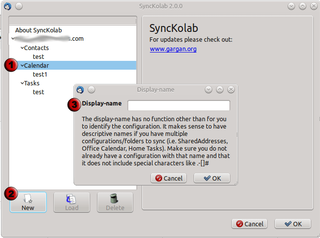
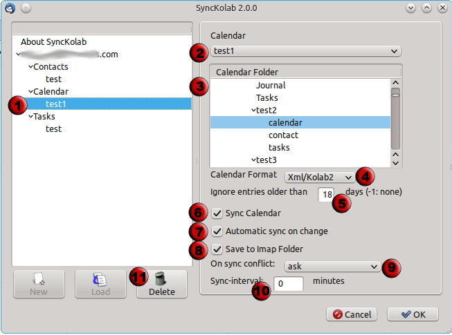

Installation
SyncKolab 0.4.34+
Step 1: Download the lightning plugin then the
extension (use "rightclick/save as" otherwise firefox will try to install it)
Step 2: Open Thunderbird and use Tools/Extensions then install the downloaded calendar and the synckolab xpi
Step 3: Restart Thunderbird
Step 4: Configure the plugin

(1) will open the configuration wizard
Optional Step 5: get the icon


rightclick on the icon bar (2) (next to Stop) go to customize and drag the "Sync Kolab" Icon (3) to the
bar (4)
Step 6: click the icon or menu entry and the sync will start
MAKE SURE YOU READ THE RELEASE NOTES OF THE VERSION!!!
Configuration 2.0.0+
You can enter the SyncKolab configuration either using the menu entry, or using the addon-konfiguration. Once there you will see:

- This shows the configuration tree. Every imap account you have configured in thunderbird will be visible there. Selecting the "About SyncKolab" entry allows to configure "global" parameters
- If you encounter any problems with synckolab (i.e. entries not synced correctly) use this to adjust the debug output. Debug will print pretty much everything on the javascript console.
- If you check "Automatically sync on start", synckolab will run every time you start thunderbird. All active configuration will then be executed
- "Hide selected Folders" will prevent you from accessing the imap folders you selected for sync. Instead of showing the imap content, the addressbook/calendar will open instead.
- ""Hide the status window" will not show a status window when syncing automatically (i.e. on start or usign the timer). instead you can see the progress in the bottom right corner of thunderbird.

- If you select either "Contacts", "Calendar" or "Tasks" you will be able to add new configurations.
- is then active, if you click it
- will show a dialog box where you can enter the name of the configuration. Make sure not to use any special characters there.

- Selecting a configuratio name will allow you to setup each element.
- This dropdown box lets you select the calendar/adressbook used for syncing
- In the list of folders, select an imap folder to sync with
- Format: Select the (prefered) xml/kolab format or the vcard/ical format. It is recommended to use the xml format because the vcard/ical format is very outdated and not as clearly specified.
- Ignore Entries: this is only available for calendar or tasks. The number of days entered is used to reduce the number ofitems synced. If an entry is older than that number of days, it will be ignored. -1 will sync EVERY item, no matter how old.
- Sync: Unchecking this box means that you do not want to sync the data at all (disables this configuration)).
- Automatic Sync: You need to restart thunderbird for this to be active. Once it is, synckolab will listen on the imap folder and the local calendar/address book for any changes you make and instantly sync. This means, you do not neet to actually run a sync any more. Note: this will only work on changes. To get the initial data, you will have to run the sync at least once!
- Save to Imap Folder: The checkbox is only important for shared folders where you have read-only access. This makes sure synckolab does not try to write any data into the imap folder uncheck this box. This will overwrite the local data on each sync.
- Sync Interval: The sync interval is 0 per default (do not sync automatically). You can change this to the number of minutes between each sync. If you want auto-sync use 5-10 Minutes for autosync in a workgroup. Depending on the internet connection and imap server you can decrease this number.